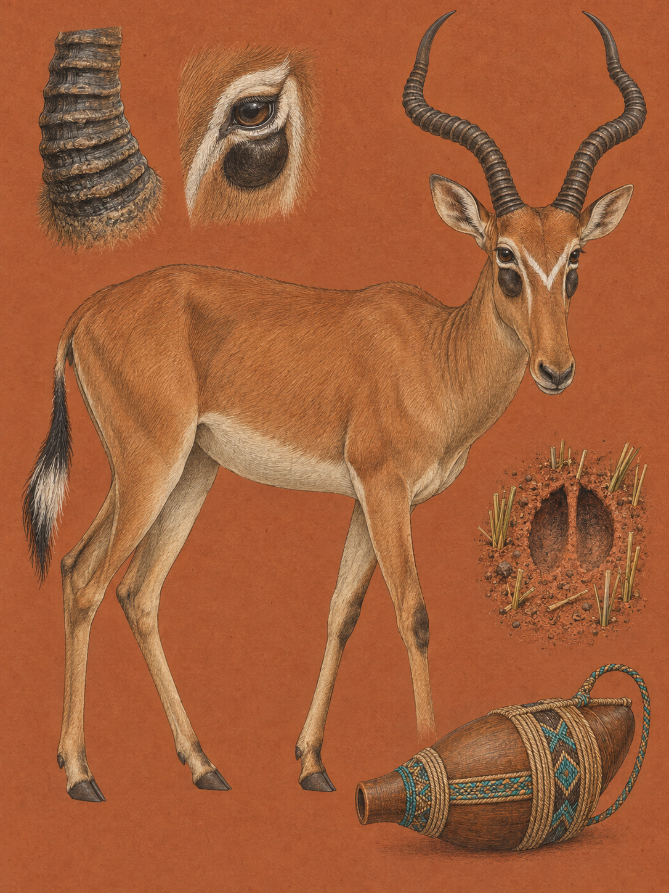

TSAVO / AMBOSELI
Beatragus hunteri
Somali: „Hirola“, „aroli“, „arawale“, „arrola“, „arawla“, „carowla“; Orma: „Herola“

In der offenen Kurzgrassteppe des südlichen Tsavo Ost steht eine Antilope mit einer weißen Brille im Gesicht. Unter jedem Auge liegt eine große dunkle Voraugendrüse, die wie ein zweites Auge wirkt. Von dort kommt der englische Beiname „four-eyed antelope“. Die Hunter-Antilope trägt gelbbraunes bis rötlich lohfarbenes Fell, einen fast waagerechten Rücken und einen Schwanz mit schwarzweißer Quaste. Erwachsene Tiere wiegen 73 bis 118 Kilogramm und erreichen 95 bis 125 Zentimeter Schulterhöhe. Männchen sind geringfügig größer und dunkler als Weibchen. Ihre Hörner biegen sich zuerst nach außen und dann steil nach oben und hinten. Von vorn bilden sie ein U. Diese Gestalt gehört zu einer Linie, die sich lange unabhängig von ihren Verwandten entwickelte.
Der anerkannte Name Beatragus hunteri erinnert an Henry Charles Vicars Hunter. Der britische Großwildjäger und Zoologe sammelte 1887 und 1888 am Unterlauf des Tana-Flusses das erste wissenschaftlich erfasste Exemplar. Philip Lutley Sclater beschrieb die Art 1889 zunächst als Damalis hunteri und im selben Jahr auch als Cobus hunteri. Edmund Heller stellte sie 1912 in die eigene, monotypische Gattung Beatragus. Nach Sclaters Erstbeschreibung wechselte die Art noch zwischen den Gattungen Alcelaphus und Damaliscus. Erst molekularbiologische und zytogenetische Studien bestätigten die besondere Linie. „Bea“ als Kürzel für British East Africa und tragus als griechisches Wort für Ziegenbock gelten als wahrscheinliche, aber vermutete Herleitung des Gattungsnamens. Somali nennt das Tier „Hirola“, Orma „Herola“. Die Zuordnung von Herola ist in der Fachliteratur umstritten.
Die Linie der Gattung Beatragus spaltete sich vor etwa 3,1 Millionen Jahren von den übrigen Kuhantilopen ab. Fossilien von Beatragus vrbae aus der Afar-Senke und von Beatragus antiquus aus der Olduvai-Schlucht zeigen, dass diese Linie sehr alt ist. Bei der lebenden Art unterscheiden sich die Chromosomen von denen verwandter Antilopen. Diese Veränderung schafft eine reproduktive Barriere: Selbst wenn beide Linien denselben Lebensraum teilten, wäre genetischer Austausch nicht möglich. Diese Trennung ist heute anerkannt.
Diese Isolation bewahrte ein Verhalten, das bei den anderen Gattungen der Leier- und Kuhantilopen verloren ging. Ein Männchen hebt beim Flehmen den Kopf, zieht die Oberlippe zurück und verschließt vorübergehend die Nasenlöcher. Dadurch entsteht ein Unterdruck. Flüchtige Duftstoffe aus dem Urin eines Weibchens gelangen in das Vomeronasalorgan, das die chemischen Signale der Brunft prüft. Beatragus ist die einzige noch lebende Gattung der Alcelaphini, die diesen Mechanismus bewahrt hat. Auch der Verdauungstrakt trägt Spuren der langen Eigenentwicklung. Ein besonders großer Pansen und hohe Schleimhautleisten im Netzmagen helfen dabei, faserreiche Kurzgräser unter trockenen Bedingungen aufzuschließen.
Heute reicht das natürliche Verbreitungsgebiet nur noch über höchstens 1.500 Quadratkilometer im Nordosten Kenias zwischen Tana und Juba. Die Art braucht semiaride Kurzgrassteppen, leichtes Buschland und Savannenmosaike auf sandigen Böden. Auf der Reiseroute kommt sie ausschließlich im südlichen Tsavo Ost vor. Die Tiere fressen vor allem Süßgräser, darunter Panicum infestum, Digitaria rivae und Cenchrus ciliaris. Bevorzugte Gräser beißen sie in 5 bis 9 Zentimetern Höhe ab, weniger bevorzugte Arten bis zu 16 Zentimeter über dem Boden.
Die Weidezeiten folgen der Temperatur. In den kühlen Stunden von 06:00 bis 10:00 Uhr und von 15:30 bis 18:00 Uhr ziehen die Tiere auf der Suche nach frischem Gras weiter. In der Mittagshitze stehen sie reglos im Schatten. Männchen verteidigen Reviere und führen Gruppen mit zwei bis sechs Weibchen und deren Jungtieren. Einzelne oder junge Männchen schließen sich manchmal Grant-Gazellen oder Steppenzebras an. Mehr Augen und Ohren bedeuten in der offenen Landschaft einen gemeinsamen Wachsamkeitsvorteil. Revierhalter markieren Grashalme mit dem Sekret ihrer Voraugendrüsen, scharren den Boden auf und tragen ritualisierte Kämpfe aus. Ernsthafte Kämpfe finden kniend auf den Vorderfußwurzelgelenken statt.
Ende September und Anfang Oktober beginnt die Kalbungssaison. Nach einer Tragzeit von fast acht Monaten sondert sich ein trächtiges Weibchen für zwei Wochen von der Herde ab. Das Kalb kann bald stehen und laufen, bleibt aber in den ersten Monaten gefährdet. Löwen, Geparden und Tüpfelhyänen töten viele Jungtiere. Gleichzeitig bringt die kleine Regenzeit frisches Kurzgras hervor, und die Herden folgen dem Niederschlagsgradienten. Die Landschaft selbst entscheidet mit. Wo Elefanten Bäume umlegen, bleibt die Steppe offen. Wenn diese Landschaftspflege ausbleibt, breiten sich Bäume aus, und der Lebensraum der Hunter-Antilope schrumpft.
Die Zahlen erzählen, wie klein diese Linie geworden ist. In den 1970er Jahren lebten weltweit schätzungsweise 14.000 bis 16.000 Tiere, bis 1988 waren es nur noch 1.600. Die Tsavo-Ausweichpopulation zählte 1995 76 Tiere, 2000 77 und 2011 wieder 76. Eine Studie von 2020 fand bei den verbliebenen Tieren keine akute Inzuchtdepression, obwohl es einen historischen genetischen Flaschenhals gab. Die Antilope ist selten, doch ihre genetische Geschichte ist nicht einfach eine Geschichte des Verschwindens. Sie gilt heute als Flüchtlingsspezies, die in suboptimale Habitate gedrängt wurde.
Im südlichen Tsavo Ost ist die Hunter-Antilope heute eine Erinnerung daran, dass eine offene Steppe nicht leer ist. Zwischen kurzen Gräsern kann ein Männchen den Kopf heben, die Lippe zurückschlagen und den Duft der Herde prüfen. Dann schließt sich die weiße Brille wieder über dem ruhigen Gesicht.
In Ijara, dem letzten natürlichen Rückzugsgebiet der Art, gilt die Hunter-Antilope in der pastoralen somalischen Kultur als Glücksbringer. Überliefert ist, dass Rinder und Ziegen sich besser vermehren und seltener erkranken, wenn sie auf Weiden grasen, die auch von Hunter-Antilopen genutzt werden. Deshalb verbieten kulturelle Tabus die Jagd und den Verzehr. Wer ein Tier tötet, kann aus der Dorfgemeinschaft ausgeschlossen werden. Geschäftsleute benennen Betriebe nach der Antilope, um Wohlstand und Schutz anzuziehen. Diese Verbindung betrifft Tiere, Weideflächen und die Erinnerung an den Ort zugleich.
Aus dieser Beziehung entstand auch eigener Naturschutz. Die Gemeinschaft gründete 2012 das Ishaqbini Hirola Sanctuary, ein 43 Quadratkilometer großes, gegen Raubtiere und Elefanten eingezäuntes Kerngebiet. Mit 48 Gründertieren gestartet, wuchs die Population bis Dezember 2019 auf 118 bis 130 Tiere. 2019 wurden außerdem mehr als 63.000 Stück Hausvieh geimpft, um die Übertragung von Krankheiten zu verringern. Weltweit gilt die Art als vom Aussterben bedroht. Heute leben schätzungsweise nur 300 bis 500 Tiere in freier Wildbahn.
Wo und wann: Im südlichen Tsavo Ost, südlich des Galana-Flusses, zwischen 06:00 und 10:00 Uhr oder 15:30 und 18:00 Uhr. Halte mindestens 30 Meter Abstand und warte auf Flehmen, Drüsenmarkierung oder den schweren Galopp.
Brennweite: 100 bis 400 mm oder 150 bis 600 mm für die Herde und das Gesicht. Für die Landschaft mit Kurzgrassteppe eignet sich 45 mm.
Bild-Idee: Verbinde die weiße Gesichtsbrille mit der offenen Steppe. Ein Detailbild zeigt die dunkle Voraugendrüse, ein zweites die auf 5 bis 9 Zentimeter abgefressenen Halme unter den Hufen.